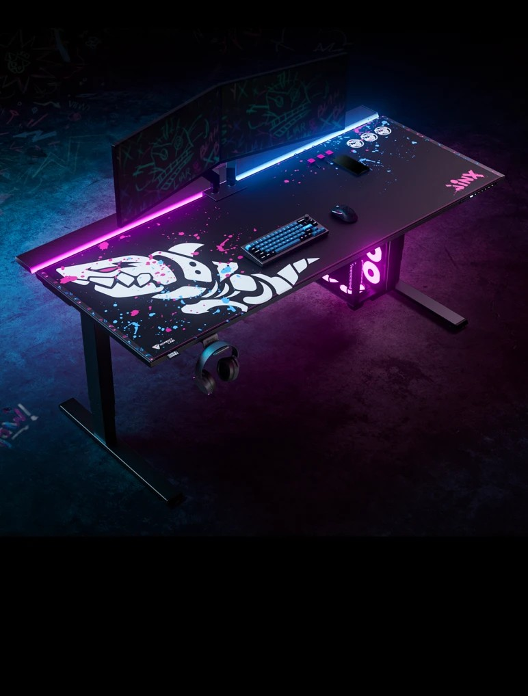

Setup & Gear
The tools behind the Sanctuary — built for calm, focus, and creation.
✦
Why This Setup Works
My setup is intentionally built for neurodivergent comfort — low latency, low overwhelm, high clarity. Every piece of gear supports smoother streams, calmer workflows, and a sensory-friendly environment.
- Low-latency hardware reduces overwhelm during fast gameplay.
- Clean audio helps with sensory comfort and communication.
- Stream Deck automation reduces cognitive load.
- Lighting and layout designed for focus and calm.
💻 Streaming PC Specs
| Component | Description |
|---|---|
| Intel I9 13th Gen i9‑13980HX | Built for smooth gameplay and streaming. |
| NVIDIA RTX 4070 Laptop GPU | High FPS, crisp visuals, reliable performance. |
| 32GB RAM | Multitasking, streaming, and running multiple apps. |
| SSD + HDD | Fast load times and long‑term storage. |
🎙️ Streaming Gear
| Gear | Description | Image |
|---|---|---|
| Shure MV7+ | Clear, crisp audio for the best viewer experience. |  |
| Jinx Magnus XL Slider | A sturdy, spacious setup built for comfort. |  |
| Elgato Stream Deck XL | Quick controls for scenes, sound effects, and automation. |  |
| Razer Kraken Kitty V3 Pro | Comfortable audio monitoring for long sessions. |  |
🧩 Software I Use
- OBS Studio — streaming & scene management
- Adobe Audition — audio cleanup & enhancement
- Figma — UI/UX design & layouts
- VS Code — development & coding
- Canva — quick graphics & templates
- DaVinci Resolve — video editing
- StreamElements — overlays & alerts
🎮 Consoles & Accessories
| Console / Accessory | Description | Image |
|---|---|---|
| PS5 Pro | Cinematic gameplay and exclusive titles. |  |
| Nintendo Switch 2 | Perfect for cozy games, indies, and handheld adventures. |  |
| DualSense Edge Controller | Custom controllers for comfort, precision, and style. |  |
✨ Future Upgrades
- Dedicated pen plotter workstation
- Dual‑PC streaming setup
- Custom controller mods
- New lighting system
- VR setup